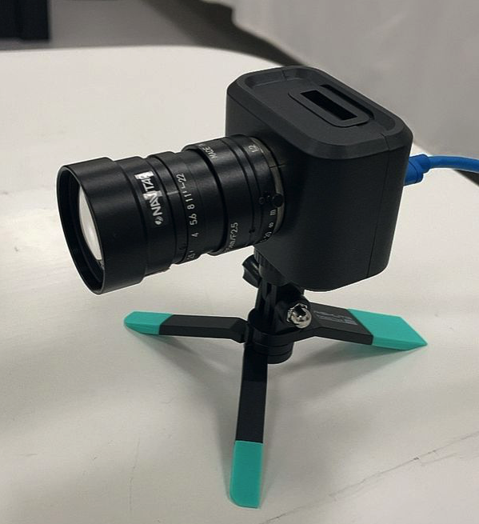
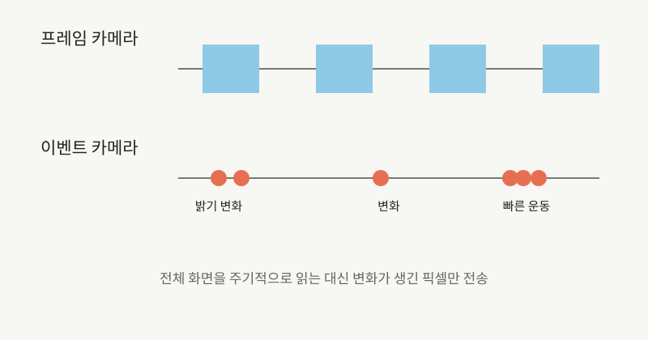

NOTE 05 · IMAGE SENSOR
이벤트 카메라의 동작 원리와 활용
보통 카메라는 정해진 시각마다 화면 전체를 읽는다. 장면 대부분이 그대로여도 매 프레임 같은 배경을 다시 보낸다. 이벤트 카메라는 반대로 각 픽셀이 밝기 변화를 감지했을 때만 좌표, 시각, 밝아졌는지 어두워졌는지를 내보낸다.


이 방식의 매력은 속도보다도 데이터의 성격에 있다. 빠르게 움직이는 물체의 경계에서는 이벤트가 쏟아지지만 멈춘 벽에서는 거의 아무것도 나오지 않는다. 노출 시간이 끝날 때까지 기다릴 필요도 없어 지연이 짧고, 밝고 어두운 영역이 섞인 장면에도 강하다.
각 픽셀은 현재 밝기의 로그값과 직전 기준값을 비교한다. 변화량이 설정된 임계값을 넘으면 ON 또는 OFF 이벤트를 발생시키고 기준값을 갱신한다. 출력은 일반적인 2차원 영상이 아니라 좌표, 시각, 극성으로 구성된 비동기 데이터 흐름이다. 마이크로초 단위의 시간 정보가 필요한 고속 운동 분석에 적합하다.
그렇다고 RGB 카메라를 곧바로 대체하는 것은 아니다. 변하지 않는 사물의 색과 질감을 읽기 어렵고, 기존 영상용 신경망도 그대로 쓸 수 없다. 취리히대 연구진이 2024년 발표한 결과가 흥미로운 이유다. 20fps RGB 카메라와 이벤트 카메라를 묶어 5,000fps 카메라 수준의 지연을 훨씬 적은 대역폭으로 맞췄다. 둘 중 하나를 고르기보다 서로 부족한 부분을 채운 셈이다.
실내 조명 깜박임, 센서 자체 잡음, 임계값 편차는 불필요한 이벤트를 만든다. 장면에 움직임이 많으면 데이터가 갑자기 증가해 희소성의 장점도 줄어든다. 이벤트를 일정 시간 창에 모아 프레임처럼 처리하면 기존 알고리즘을 쓰기 쉬워지지만 시간 해상도와 전력 효율 일부를 포기하게 된다.
현재 활용 분야는 고속 물체 추적, 로봇의 자세 추정, 드론 회피, 산업 검사 등이다. 실제 시스템에서는 RGB 카메라나 IMU와 함께 사용해 절대 밝기와 색상 정보, 운동 정보를 보완하는 구성이 일반적이다.